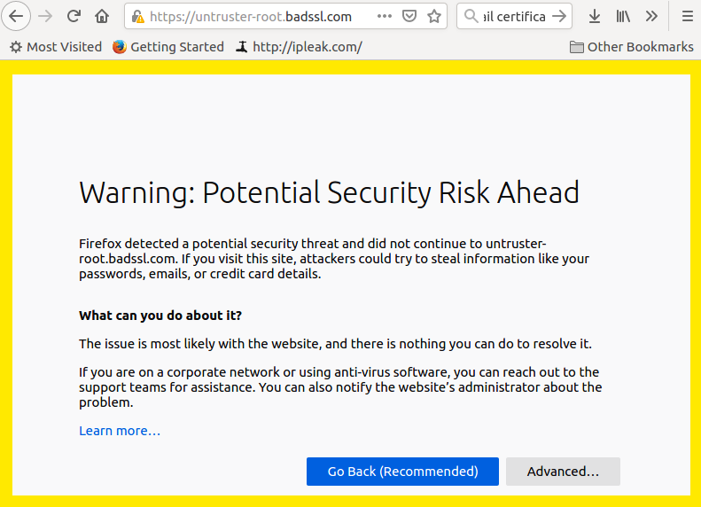

(if you have not been to the office ~year)


(if you have not been to the office ~year)
Identity:
Confidentiality:
Digital signature from a trusted certification authority (CA) on identities of parties concerned:

Trusting CA = you believe they verified I am who I claim to be when presenting signed certificate
At CERN I physically went to the CA office with my badge and happy face for a couple of times
AWS, Azure, Google can also act as CA (they have your billing address, but, likely, even more)

For signing fee of 200-400 CHF they:
Ensure Public Key Infrastructure (PKI), e.g.:
(i.e. you start trusting CA automatically when install or update your browser or OS)
Creating certificate signing request (here RSA 2048 bits only, ECDSA requires an extra step):
openssl req -newkey rsa:2048 -keyout PRIVATEKEY.pem -out MYCSR.csr
Self-signing this request (using the same private key for simplicity):
openssl x509 -req -in MYCSR.csr -signkey PRIVATEKEY.pem -out CERT.crt
Examining certificate:
cat CERT.crt | openssl x509 -noout -text
(clients cannot modify any fields without breaking the signature)
Creating a pk12 bundle with your certificate and private key to load into your browser
openssl pkcs12 -export -in CERT.crt -inkey PRIVATEKEY.pem -out CERT.p12
awk -v cmd='openssl x509 -noout -subject' '/BEGIN/{close(cmd)};{print | cmd}' < /etc/ssl/certs/ca-certificates.crt
Certificate:
Data:
Version: 3 (0x2)
Serial Number:
3c:b2:f4:48:0a:00:e2:fe:eb:24:3b:5e:60:3e:c3:6b
Signature Algorithm: ecdsa-with-SHA384
Issuer: C=US, O=GeoTrust Inc., OU=(c) 2007 GeoTrust Inc. - For authorized use only, CN=GeoTrust Primary Certification Authority - G2
Validity
Not Before: Nov 5 00:00:00 2007 GMT
Not After : Jan 18 23:59:59 2038 GMT
Subject: C=US, O=GeoTrust Inc., OU=(c) 2007 GeoTrust Inc. - For authorized use only, CN=GeoTrust Primary Certification Authority - G2
Subject Public Key Info:
Public Key Algorithm: id-ecPublicKey
Public-Key: (384 bit)
pub:
04:15:b1:e8:fd:03:15:43:e5:ac:eb:87:37:11:62:
...
ASN1 OID: secp384r1
NIST CURVE: P-384
Signature Algorithm: ecdsa-with-SHA384
30:64:02:30:64:96:59:a6:e8:09:de:8b:ba:fa:5a:88:88:f0:
...
Seems solved: I give you my public key with the certificate and you send me yours, right?
In reality we use expensive asymmetric ciphers only during TLS (and SSH) handshake
When handshaking, a new symmetric key is encrypted, exchanged, and used for the session
openssl s_client -showcerts -connect cms.cern.ch:443
Protocol : TLSv1.2
Cipher : ECDHE-RSA-AES128-GCM-SHA256
Session-ID: 9DC55EEDFBB77EF3003E8199F55106A0BAB3016E237055A0604DBF3400933F60
Session-ID-ctx:
Master-Key: 31BC2413EC47161328544ED0018FCD8291AD0A6ACDB1991BEA99142C8A78AB68C5BF9C751CB19BDE006E4A68A6FE5B3C
Key-Arg : None
PSK identity: None
PSK identity hint: None
SRP username: None
TLS session ticket lifetime hint: 7200 (seconds)
TLS session ticket:
0000 - 49 52 65 49 c1 cd 8a 8a-b7 13 84 b5 44 54 a0 a6 IReI........DT..
...
Digital certificates are everywhere these days
You often don’t know until one expires and you run into troubles
Fortunately, with openssl suite you can debug a problem to some level
Most of the reported fields were mystery to me, now I understand some
https://joehonton.medium.com/cipher-suites-demystified-ada2e97be9c9
https://joehonton.medium.com/the-secret-handshake-sni-virtual-hosting-9dfe63818b82
https://goteleport.com/blog/ssh-handshake-explained
https://goteleport.com/blog/ssh-certificates/
https://www.misterpki.com/openssl-s-client/
https://www.feistyduck.com/library/openssl-cookbook/online/ch-testing-with-openssl.html
https://www.educba.com/what-is-an-algorithm/
https://www.educba.com/digital-certificate/
https://www.educba.com/what-is-digital-certificate/
https://protonmail.com/blog/tls-ssl-certificate/#What-is-TLS
https://www.ssl.com/how-to/manually-generate-a-certificate-signing-request-csr-using-openssl/
https://www.ssl.com/faqs/what-is-a-certificate-authority/